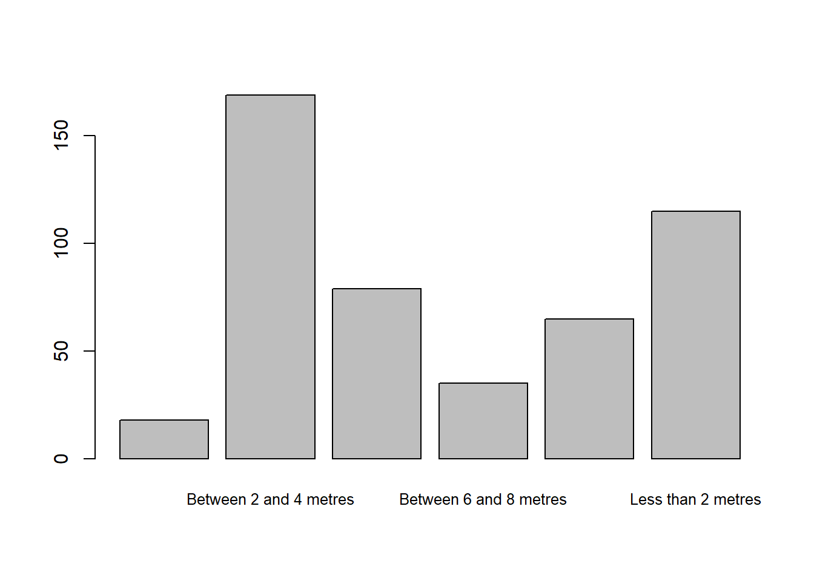

The NHMDE package for R can be used to pre-process the NHM Data Ecosystem exports for Nature Overheard to make them suitable for initial exploratory analyses in R.
# If required, install the devtools package
if (!requireNamespace("devtools", quietly = TRUE)) {
install.packages("devtools")
}
# Install the NHMDE package from GitHub
devtools::install_github("edwbaker/NHMDE")
# Load the NHMDE package
library(NHMDE)The cs_get_data() function from NHMDE is
used to read data from community science exports from the Data
Ecosystem. Reading data using cs_get_data() is similar to
using the standard R function read.csv(), but you must also
specify the project.
raw_data <- read.csv("data/nature_overheard__samples.csv")
nhmde_data <- cs_get_data("data/nature_overheard__samples.csv", project="natureoverheard")cs_get_data() will return a data frame with the data
from the file, but unlike read.csv(), it will also check
that the data has the expected columns and set appropriate data types on
each column.
For factors (categorical data types) it will also recode the data with shorter labels suitable for use in plots, and reorder the levels of the factor to give expected outputs when using standard R functions.
The checks and transformations applied to the data comprise of those
applicable to all community science samples, and those specific to the
project. This is handled internally by the cs_get_data()
function, but will require new definitions to be created for additional
projects.
Examples of the benefits of using cs_get_data() are
illustrated below.
The export from the Data Ecosystem has all habitat types recorded for a sample in a single column.
head(raw_data$habitat_features)## [1] ""
## [2] "Trees,Shrubs,Hedgerow"
## [3] "Trees,Shrubs,Hedgerow,Mown lawn,Wildflowers,Garden plants"
## [4] "Trees,Shrubs,Hedgerow,Wildflowers"
## [5] "Trees,Shrubs,Wildflowers,Garden plants"
## [6] "Shrubs,Mown lawn,Wildflowers"The NHMDE package will split these into separate columns, with a column for each habitat type.
head(nhmde_data$habitat_feature_Trees)## [1] FALSE TRUE TRUE TRUE TRUE FALSEThis allows for easier analysis of the data, as the habitat types are now in separate columns.
As all of the habitat feature columns start with the same prefix
(habitat_feature_), it is easy to select them all for
analysis from the data frame.
# Identify the columns starting with "habitat_feature_"
cols <- startsWith(colnames(nhmde_data), "habitat_feature_")
# Sum the counts of each habitat feature
counts <- colSums(nhmde_data[, cols])
# Get the names of included columns
names <- colnames(nhmde_data)[cols]
# Remove the `habitat_feature_` prefix
names <- gsub("habitat_feature_", "", names)
# Replace space character with newline character to save space in plot
names <- gsub(" ", "\n", names)
#
barplot(counts, names.arg=names, cex.names=0.8)Using raw data
barplot(table(raw_data$distance_from_road), cex.names=0.8)
Using NHMDE
barplot(table(nhmde_data$distance_from_road), cex.names=0.8)The pre-processing provided by NHMDE has given the factors shorter labels, allowing them to be clearly displayed, and has reordered the levels of the factor to give a more meaningful plot.
Baker E (2024). NHMDE R Package. https://github.com/edwbaker/NHMDE.